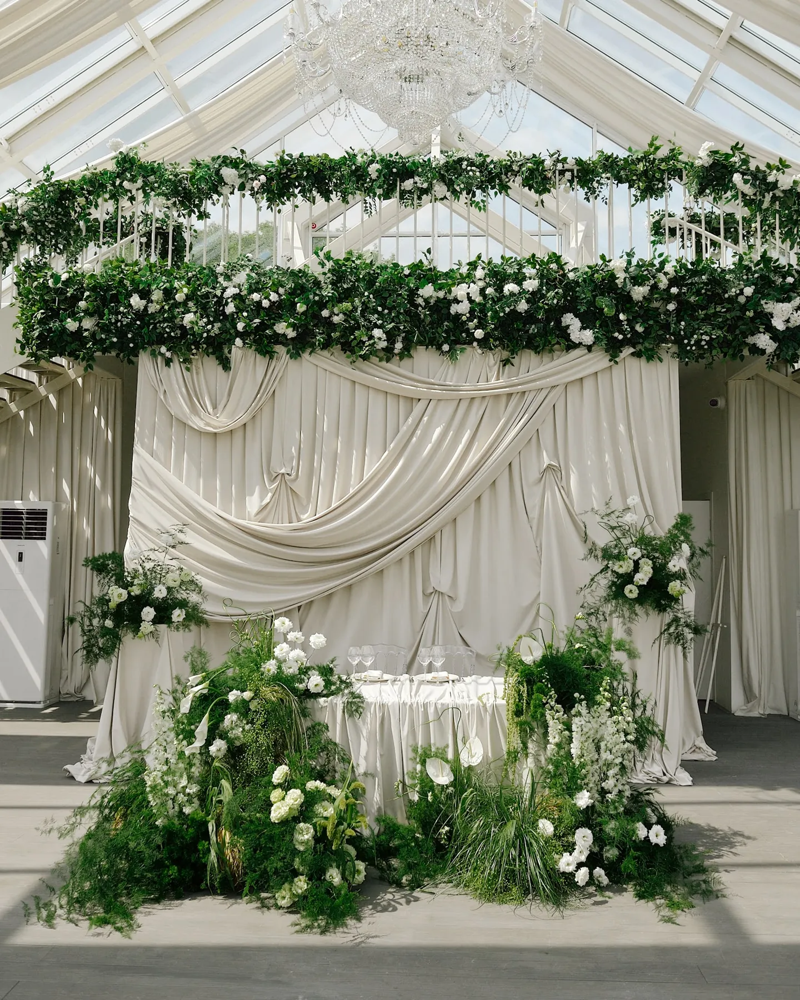
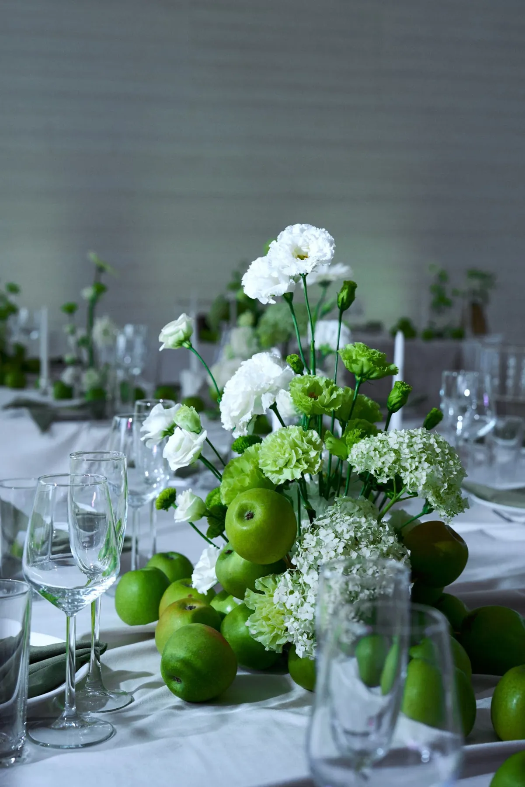

Коротко
Сколько стоит оформление свадьбы?
Цена зависит от состава: какие зоны оформляем, сколько цветов и ткани, нужны ли конструкции и свет. В сметах наших свадеб 2026 года на 40–60 гостей минимальная сумма декора — 150 000 ₽. Назовите дату, площадку, число гостей и бюджет-ориентир — соберём состав и пришлём смету по позициям за 24 часа.
- Дороже всего: церемония и президиум — их видят все гости и камера
- Экономия: одна сильная зона вместо мелочей по всему залу
- Монтаж и демонтаж: входят в смету отдельными строками
- Смета: за 24 часа
Смотрите также: свадебный декор в Москве · оформление свадьбы · аренда свадебного декора
Свадебный декор · смета за 24 часа
Хотите посчитать декор вашей свадьбы?
Расскажите о дате, площадке и числе гостей, пришлите референсы — предложим идею и посчитаем смету по позициям за 24 часа.
Свадебный декор FFP →На вопрос «сколько стоит оформление свадьбы» честный ответ — «зависит от состава». Одна и та же площадка может быть оформлена очень по-разному, и смета меняется вместе с этим. Рассказываем, из чего складывается стоимость декора, что её повышает и как распределить бюджет, чтобы свадьба выглядела цельно.
Смета строится по позициям, а не «пакетом»
Мы считаем оформление по зонам и материалам: каждая позиция — отдельной строкой. Так видно, за что вы платите, и можно убрать или добавить элемент, не пересчитывая всё заново. Основные статьи:
- Зоны. Церемония, президиум, гостевые столы, велком-зона, фотозона, торт.
- Цветы и зелень. Объём, сорта, сезон.
- Ткань и текстиль. Драпировка, скатерти, дорожки, салфетки.
- Конструкции. Арка, фоны, подвесы, подставки.
- Свет и свечи.
- Аренда. Вазы, подсвечники, мебель, номера столов.
- Монтаж, демонтаж и логистика.
Какие зоны дают больше всего эффекта
Если бюджет нужно распределить, начните с зон, которые попадают в кадр и видны всем гостям: церемония (арка и проход), президиум и фотозона. Гостевые столы можно сделать лаконичнее в той же палитре — цельность палитры важнее количества цветов. Подробнее — в статьях про президиум, про свадебную арку и про фотозону на свадьбу.

Что повышает смету
- Цветы не по сезону и редкие сорта.
- Большие конструкции и подвесы — особенно под высоким потолком.
- Короткое окно монтажа. Если площадка даёт мало времени, нужна большая команда.
- Ночной монтаж и демонтаж сразу после банкета.
- Две локации — например, церемония на улице и банкет в зале — и перенос декора между ними.
- Удалённая площадка — логистика и время команды.
Как сэкономить без потери вида
- Зелень и фактура. Ветки, листья, фрукты дают объём без большого количества цветов. Подробнее — в статье про зелень в свадебном декоре.
- Ткань. Драпировка закрывает большие площади и меняет зал. Подробнее — в статье про текстиль и драпировку.
- Аренда основы. Каркасы, вазы, подсвечники берут в аренду, а флористику собирают под вашу палитру. Подробнее — в статье про аренду свадебного декора.
- Перенос композиций. Цветы с церемонии можно переставить к президиуму, если площадка и тайминг позволяют. Подробнее — в статье про регистрацию в зале.
- Свечи. Свет создаёт атмосферу вечера и делает скромный декор богаче. Подробнее — в статье про свечи на свадьбу.

Примеры: разный подход к одной задаче
В наших кейсах видно, как по-разному работает бюджет. В свадьбе «Белый шатёр и зелёные яблоки» акцент сделан на простом приёме — зелёных яблоках в композициях. В свадьбе «Шёлк, пионы и свечи» главную роль играет шёлковая драпировка, а в свадьбе «Красный бархат и зелень» — одна большая бархатная фотозона на террасе.
Как получить смету
Расскажите о дате, площадке, числе гостей и пришлите референсы — предложим идею декора и посчитаем смету по позициям за 24 часа. Если есть бюджет-ориентир, назовите его: подберём состав, который даст максимум эффекта именно в этих рамках. Подробнее о работе — на странице «Свадьбы».
Частые вопросы
Сколько стоит оформление свадьбы?
Зависит от площадки, количества зон, цветов, конструкций и монтажа. Пришлите дату, площадку и референсы — посчитаем смету по позициям за 24 часа.
На чём можно сэкономить в декоре свадьбы?
На количестве цветов — за счёт зелени, ткани и свечей; на покупке — за счёт аренды основы; на числе зон — сделав акцент на церемонии, президиуме и фотозоне.
Почему смета зависит от площадки?
Площадка определяет время и условия монтажа, высоту потолков, правила по креплениям и огню и логистику.
Можно ли уменьшить смету после расчёта?
Да: смета по позициям, поэтому элементы можно убрать или заменить, не теряя общей идеи.